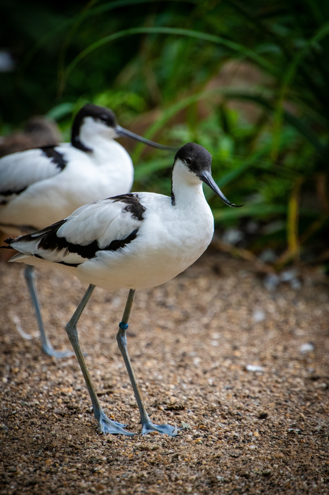

Recurvirostra avosetta — a wader combining migration with local breeding in Arab wetlands.
Identity and classification
The Pied Avocet belongs to the family Recurvirostridae and the order Charadriiformes. Its black-and-white plumage and upturned bill make it readily recognisable while revealing a specialised way of feeding. It occurs across Europe, Asia and Africa, but not every population migrates: some are resident or move opportunistically as water becomes available.
How to recognise it
It measures approximately 42–46 cm in length, with a wingspan of 67–77 cm. Key features are a slender black bill curving upwards, bluish-grey legs, and a black cap with black areas on the wings and back. The sexes look similar; the male tends to have a longer, less sharply curved bill, so colour alone does not establish sex. Juveniles have dull brown rather than clean black markings. The Black-winged Stilt differs in having a straight bill and very long pinkish-red legs.
Habitat, food and behaviour
It uses shallow water, mudflats, coastal lagoons, saltpans and saline wetlands, as well as some inland wetlands and artificial pools. Sweeping its slightly open bill from side to side through water or soft mud, it takes small invertebrates, including crustaceans, worms and insect larvae. It may also pick prey directly. Feeding takes place by day and sometimes at night. Outside the breeding season, birds gather in flocks to feed and rest; a flock’s presence does not establish year-round residence.
Occurrence in Arab countries
In Morocco it is a common passage migrant and winter visitor, with local breeding. Northeastern Algeria supports resident breeding populations, while Tunisia has documented breeding and wintering in its wetlands. Egypt receives passage migrants and winter visitors, including in northern Sinai and the Nile Delta. Iraq supports residents and winter visitors, with breeding documented in the southern marshes.
In Saudi Arabia it is an uncommon passage migrant and winter visitor, breeding in small numbers in the Eastern Province. In Kuwait passage is uncommon but winter occurrence is common; in Oman it is a fairly common passage migrant and winter visitor. In the United Arab Emirates it occurs mainly from September to March, with highly localised, variable winter numbers and documented small-scale breeding. In Lebanon it is a scarce passage migrant and a rare winter visitor, not a widespread resident.
What does late October mean?
This period coincides with the end of the documented autumn passage window in Saudi Arabia and Lebanon, and falls within the usual season of occurrence in the UAE. The Saudi reference defines winter as November–February. The species therefore suits an autumn feature, but one arrival date cannot be applied across the Arab world, nor does every sighting demonstrate wintering or breeding. Actual occurrence remains dependent on the site, water and food.
Breeding and life cycle
The pair makes a shallow scrape on open ground near water or on a low island, sometimes nesting in a colony. A typical clutch contains 3–4 eggs; both parents incubate and care for the young. BTO gives typical incubation of 23–25 days and fledging at 35–42 days after hatching: reference values, not a fixed timetable for every population. Downy chicks leave the nest early and feed themselves under parental protection. Birds typically begin breeding at two years old.
Conservation and responsible observation
The global Red List assessment places the species in Least Concern (LC), with its worldwide population trend unknown; this does not mean local threats are absent. Wetland loss, pollution and disturbance affect it, while ground nests face flooding and predation. Observe from a suitable distance without entering flocks or approaching nests and chicks. Protecting feeding and resting habitat matters as much as protecting breeding sites.
References
Sources: BirdLife International, Pied Avocet Red List assessment, 2021; BTO BirdFacts; LPO species account; Hong Kong Bird Watching Society, The Avifauna of Hong Kong; The Birds of Saudi Arabia, Boland and Al-Suhaibany; official Kuwait and UAE bird checklists, 2026 updates; OSME; GREPOM/Go-South; Tunisian Ramsar documentation; ornithological studies from Algeria, Egypt and Iraq; Updated Checklist of the Birds of Lebanon. Information reviewed: 25 October 2026.
Photo: freddy dendoktoor — PublicDomainPictures (CC0).